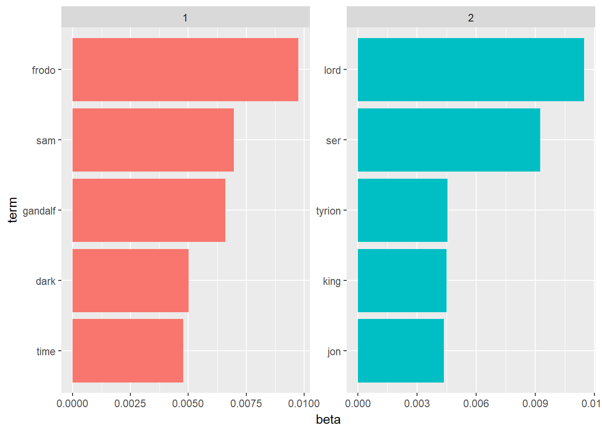
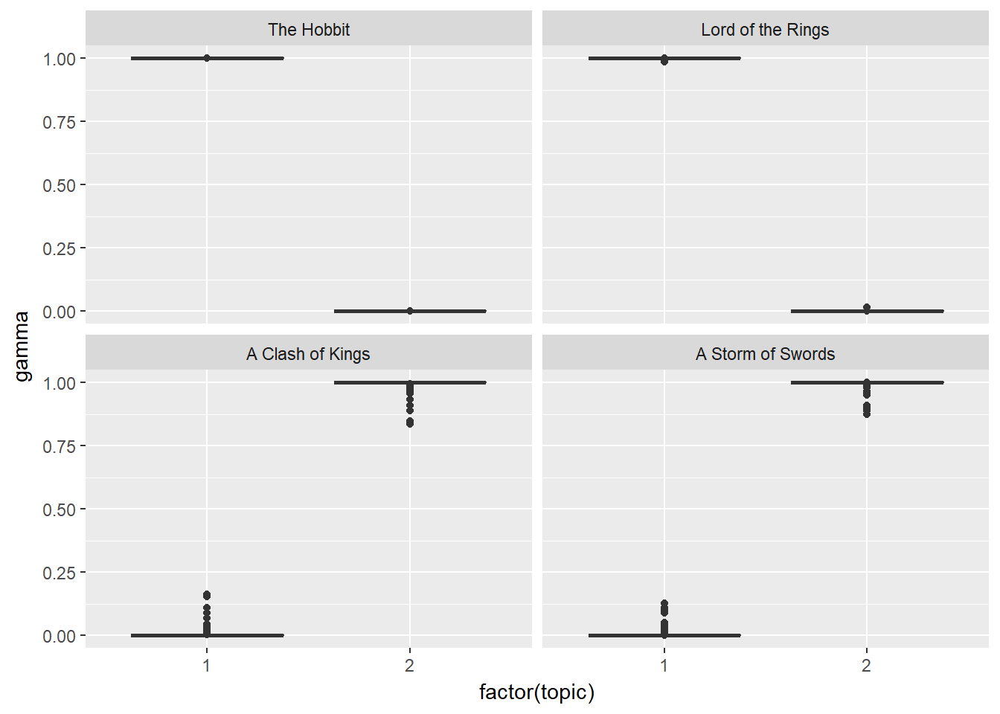

Submitted 2018.25.02
When we are dealing with collection of documents, such as all the text files from Bronze Age Assyrian civilization, we may want to divide them into natural groups like “Trade” and “Warfare”.
LDA is a popular method for fitting such models: (a) It considers each document as a mixture of topics (b) And each topic as a mixture of words.
What does this mean?
Lets say we have a 2 topic LDA model on ancient Assyrian texts. The first text script has a probability of 85% coming from topic 1, and a probability of 15% coming from topic 2 (a).
In “Warfare” and “Trade” example above, the most frequent words in “warfare” topic can be: [“massacre”, “head”, “enslave”, “burn”], while “Trade” topic may contain: [“amphora”, “cargo”, “pay”, “ship”] (b).
LDA is a method estimating both of these (a and b) at the same time. It is important to realize that this is an unsuperwise method. We dont have these “Trade” and “Warfare” labels at the beginning. And the analyst decides how many topics there will be.
Start with getting the data and preprocessing it %>% We unnest_tokens and create a tidy text format %>% Now we can do summaries, count the words, compute frequencies and tf-idf %>% It is time to visualize these first results.
Start sentiment analysis, decide/find the lexicons you want to use %>% inner_join them with your tidy text %>% group_by and do summaries %>% visualize these second group of findings.
Start again with your raw data %>% this time unnest_tokens using ngram %>% do filtering where needed and then apply tf-idf %>% visualize your findings %>% apply sentiment analysis on your ngram %>% visualize your findings
Create document term matrix from the text %>% apply LDA to do topic modeling %>% work on your topics using dplyr tidyr as usual %>% visualize your findings.
During visualization look at other libraries other than ggplot also, such as igraph.
library(stringr)
library(dplyr)
library(tidyr)
library(tidytext)
library(ggplot2)
library(ggthemes)
library(gridExtra)
library(scales)
library(broom)
library(purrr)
library(topicmodels)
library(tm)
library(SnowballC) #stemWe will load 2 books from Game of Thrones series, The Lord of the Rings series and The Hobbit. Our objective is to do topic modeling where we expect finding natural groups of items.
The underlying philosophy is to be able to use this method even when we are not sure what we are looking for.
In this setup below we already know that we have 2 author and thus, 2 natural groups. This can get confusing and useless if we try to extract 4-5 topics out of them.
GoT2 <- readLines("GoT2.txt") %>%
data_frame() %>%
mutate(title = "A Clash of Kings")
GoT3 <- readLines("GoT3.txt") %>%
data_frame() %>%
mutate(title = "A Storm of Swords")
lotr <- readLines("lotr.txt") %>%
data_frame() %>%
mutate(title = "Lord of the Rings")
hobbit <- readLines("hobbit.txt") %>%
data_frame() %>%
mutate(title = "The Hobbit")
books <- bind_rows(list(GoT2, GoT3, lotr, hobbit))
colnames(books) <- c("text", "title")
my_stop_words <- data_frame(word = c('page'))# divide into documents, each representing one chapter
by_chapter <- books %>%
group_by(title) %>%
mutate(chapter = cumsum(str_detect(text, regex("^chapter ", ignore_case = TRUE)))) %>%
ungroup() %>%
filter(chapter > 0) %>%
unite(document, title, chapter)# split into words
by_chapter_word <- by_chapter %>%
unnest_tokens(word, text)
# find document-word counts
word_counts <- by_chapter_word %>%
anti_join(stop_words) %>%
anti_join(my_stop_words) %>%
count(document, word, sort = TRUE) %>%
ungroup()
word_counts## # A tibble: 239,860 x 3
## document word n
## <chr> <chr> <int>
## 1 A Storm of Swords_80 ser 226
## 2 A Storm of Swords_80 lord 210
## 3 A Storm of Swords_80 son 146
## 4 A Clash of Kings_68 ser 143
## 5 Lord of the Rings_1 frodo 140
## 6 A Clash of Kings_68 lord 129
## 7 Lord of the Rings_1 bilbo 121
## 8 Lord of the Rings_39 pippin 105
## 9 Lord of the Rings_49 sam 105
## 10 A Storm of Swords_80 lady 104
## # ... with 239,850 more rows‘ser’ means ‘sir’ in the world of Game of Thrones
chapters_dtm <- word_counts %>%
cast_dtm(document, word, n)
chapters_dtm## <<DocumentTermMatrix (documents: 224, terms: 23982)>>
## Non-/sparse entries: 239860/5132108
## Sparsity : 96%
## Maximal term length: 32
## Weighting : term frequency (tf)chapters_lda <- LDA(chapters_dtm, k = 2, control = list(seed = 1234))
chapters_lda## A LDA_VEM topic model with 2 topics.chapter_topics <- tidy(chapters_lda, matrix = "beta")
chapter_topics## # A tibble: 47,964 x 3
## topic term beta
## <int> <chr> <dbl>
## 1 1 ser 0.0000000000000882
## 2 2 ser 0.00923
## 3 1 lord 0.00217
## 4 2 lord 0.0115
## 5 1 son 0.00103
## 6 2 son 0.00251
## 7 1 frodo 0.00976
## 8 2 frodo 0.0000000000000000000000000000000000000000190
## 9 1 bilbo 0.00415
## 10 2 bilbo 0.0000000000000000000000000000000000000653
## # ... with 47,954 more rowstop_terms <- chapter_topics %>%
group_by(topic) %>%
top_n(5, beta) %>%
ungroup() %>%
arrange(topic, -beta)
top_terms## # A tibble: 10 x 3
## topic term beta
## <int> <chr> <dbl>
## 1 1 frodo 0.00976
## 2 1 sam 0.00697
## 3 1 gandalf 0.00660
## 4 1 dark 0.00500
## 5 1 time 0.00477
## 6 2 lord 0.0115
## 7 2 ser 0.00923
## 8 2 tyrion 0.00455
## 9 2 king 0.00448
## 10 2 jon 0.00436top_terms %>%
mutate(term = reorder(term, beta)) %>%
ggplot(aes(term, beta, fill = factor(topic))) +
geom_col(show.legend = FALSE) +
facet_wrap(~ topic, scales = "free") +
coord_flip()
It is amazing. The algorithm was able to classify The Lord of the Rings and The Game of Thrones almost perfectly. This is nice. However, I have set the k = 2. I knew that there were 2 novels. If that information is not available to us, it would be hard to evaluate and understand. It can also be misleading.
Each document in this analysis represented a single chapter. Thus, we may want to know which topics are associated with each chapter. Can we put the books back together?
per-document-per-topic probabilities : γ(“gamma”)
chapters_gamma <- tidy(chapters_lda, matrix = "gamma")
chapters_gamma## # A tibble: 448 x 3
## document topic gamma
## <chr> <int> <dbl>
## 1 A Storm of Swords_80 1 0.00000533
## 2 A Clash of Kings_68 1 0.00000953
## 3 Lord of the Rings_1 1 1.000
## 4 Lord of the Rings_39 1 1.000
## 5 Lord of the Rings_49 1 1.000
## 6 A Storm of Swords_67 1 0.0000236
## 7 A Storm of Swords_19 1 0.0000176
## 8 Lord of the Rings_2 1 1.000
## 9 Lord of the Rings_10 1 1.000
## 10 Lord of the Rings_7 1 1.000
## # ... with 438 more rowsEach gamma you see here is estimated proportion of words from that chapter that are generated from that topic. For example, we estimate that each word in the Storm of Swords Chapter 80 has only 0.000532% probability of coming from topic 1 (which is actually The Lord of The Rings).
chapters_gamma <- chapters_gamma %>%
separate(document, c("title", "chapter"), sep = "_", convert = TRUE)
chapters_gamma## # A tibble: 448 x 4
## title chapter topic gamma
## <chr> <int> <int> <dbl>
## 1 A Storm of Swords 80 1 0.00000533
## 2 A Clash of Kings 68 1 0.00000953
## 3 Lord of the Rings 1 1 1.000
## 4 Lord of the Rings 39 1 1.000
## 5 Lord of the Rings 49 1 1.000
## 6 A Storm of Swords 67 1 0.0000236
## 7 A Storm of Swords 19 1 0.0000176
## 8 Lord of the Rings 2 1 1.000
## 9 Lord of the Rings 10 1 1.000
## 10 Lord of the Rings 7 1 1.000
## # ... with 438 more rows# reorder titles in order of topic 1, topic 2, etc before plotting
chapters_gamma %>%
mutate(title = reorder(title, gamma * topic)) %>%
ggplot(aes(factor(topic), gamma)) +
geom_boxplot() +
facet_wrap(~ title) We notice that almost all of the chapters from The Lord of The Rings and The Game of Thrones series were uniquely identified as a single topic each.
Are there any cases where the topic most associated with a chapter belonged to another autor?
chapter_classifications <- chapters_gamma %>%
group_by(title, chapter) %>%
top_n(1, gamma) %>%
ungroup()
chapter_classifications## # A tibble: 224 x 4
## title chapter topic gamma
## <chr> <int> <int> <dbl>
## 1 Lord of the Rings 1 1 1.000
## 2 Lord of the Rings 39 1 1.000
## 3 Lord of the Rings 49 1 1.000
## 4 Lord of the Rings 2 1 1.000
## 5 Lord of the Rings 10 1 1.000
## 6 Lord of the Rings 7 1 1.000
## 7 The Hobbit 5 1 1.000
## 8 Lord of the Rings 22 1 1.000
## 9 Lord of the Rings 21 1 1.000
## 10 Lord of the Rings 51 1 1.000
## # ... with 214 more rowsFind the misclassified chapters
book_topics <- chapter_classifications %>%
count(title, topic) %>%
group_by(title) %>%
top_n(1, n) %>%
ungroup() %>%
transmute(consensus = title, topic)
chapter_classifications %>%
inner_join(book_topics, by = "topic") %>%
filter(title != consensus)## # A tibble: 224 x 5
## title chapter topic gamma consensus
## <chr> <int> <int> <dbl> <chr>
## 1 Lord of the Rings 1 1 1.000 The Hobbit
## 2 Lord of the Rings 39 1 1.000 The Hobbit
## 3 Lord of the Rings 49 1 1.000 The Hobbit
## 4 Lord of the Rings 2 1 1.000 The Hobbit
## 5 Lord of the Rings 10 1 1.000 The Hobbit
## 6 Lord of the Rings 7 1 1.000 The Hobbit
## 7 The Hobbit 5 1 1.000 Lord of the Rings
## 8 Lord of the Rings 22 1 1.000 The Hobbit
## 9 Lord of the Rings 21 1 1.000 The Hobbit
## 10 Lord of the Rings 51 1 1.000 The Hobbit
## # ... with 214 more rowsIt turns out there is chapter misclassification only within the same autor. Otherwise, we classified the autors perfectly.
LDA can be a good approach when we have a huge collection of unlabeled texts and we are trying to make sense of it. However, we should not forget that we are setting up how many topics will be generated ourselves.